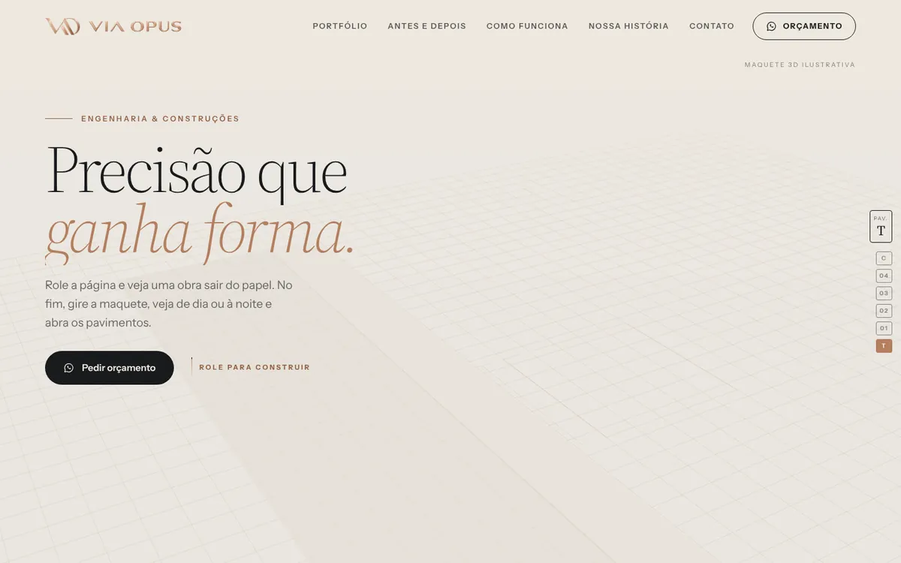
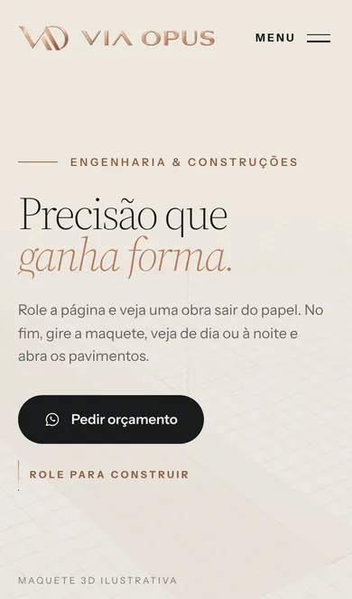
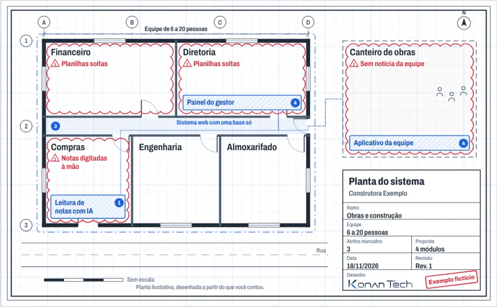

Uma base para toda a operação.
Sua equipe registra cada informação uma vez e a gestão acompanha a mesma versão dos dados.
- O que chegaArquivo, e-mail e planilha
- O que o sistema fazRegistros integrados
- O que a equipe vêPainel da operação
Sistemas sob medida, IA e automação
Um lugar para o financeiro, a equipe de campo e a gestão trabalharem com as mesmas informações, mesmo fora do escritório.
Operação conectada
Uma central para registrar, acompanhar e decidir.
Problemas que resolvemos
Escolha uma situação para ver o que muda quando as informações passam pelo mesmo sistema.
Sua equipe registra cada informação uma vez e a gestão acompanha a mesma versão dos dados.
Portfólio
Veja como cada solução foi desenhada para o trabalho de quem usa.


Apresentar a construtora com clareza e transformar visitas em pedidos de orçamento.
Um site institucional com estrutura pensada para gerar contatos, apresentação dos serviços e versão completa para celular.


Apresentar serviços e obras de engenharia com clareza, inclusive para quem visita o site pelo celular.
Capturas do site publicado.
Residencial Aurora
3 notas para revisãoOrçadoR$ 480 mil
RealizadoR$ 312 mil
SaldoR$ 168 mil
Lançamentos financeiros, notas e a evolução de cada obra ficavam espalhados, e a visão do todo dependia de juntar planilhas.
Uma plataforma que reúne lançamentos financeiros, indicadores e a evolução de cada obra em um só lugar, com inteligência artificial ajudando nos lançamentos.
Reunir lançamentos e acompanhamento da obra para dar à gestão uma visão dos custos por etapa.
Telas ilustrativas com dados fictícios. O sistema está em implantação.
Serviços do dia
Distribuição por regiãoOrdens48
Executadas31
A caminho12
OS 1042Cozinha planejadaA caminho
OS 1043Armário de quartoExecutado
OS 1044Painel de TVPendente
OS 1045Home officeCliente ausente
Minhas ordens
Armário de quarto08h00, executado
Cozinha planejada10h30, a caminho
Painel de TV14h00
Iniciar montagem
Coordenar montadores, ordens de serviço e planilhas que não conversavam entre si, todos os dias.
Aplicativo para os montadores em campo e painel para o gestor acompanhar as ordens de serviço do dia, da distribuição até a conclusão.
Acompanhar ordens de serviço e equipes em campo com as informações de cada atendimento no mesmo lugar.
Telas ilustrativas. As telas reais pertencem ao cliente.
Nova despesa
FornecedorDepósito Central
ValorR$ 2.340,00
Confirmar lançamento
Planilha da obra
Somente visualizaçãoDataFornecedorCategoriaValor
10/11Areia e britaMaterialR$ 980,00
11/11Locação de andaimeEquipamentoR$ 1.150,00
12/11Depósito CentralMaterialR$ 2.340,00
13/11Lançado por vozMão de obraR$ 600,00
Cada despesa da obra precisava ser digitada à mão, e a diretoria não tinha visão rápida dos gastos.
A equipe envia foto da nota ou um áudio, a inteligência artificial preenche os campos e tudo vai para uma planilha do Google Sheets que a diretoria acompanha.
Apoiar o lançamento de despesas a partir do documento e reduzir a digitação durante a conferência.
Telas ilustrativas com dados fictícios. O sistema está em testes.
Explicar um serviço técnico de forma simples e manter uma comunicação constante com os clientes.
Site institucional e cuidado com o Instagram e a comunicação, com identidade visual própria.
Explicar os serviços de acústica e tornar o contato mais fácil para quem está pesquisando uma solução.
Composição ilustrativa.
Soluções digitais
Confira uma nota, acompanhe um pedido ou mude os indicadores do painel. As simulações usam dados fictícios.
Para quando notas, cupons e recibos são digitados à mão. Escolha um documento e edite o que quiser nos campos.
Aguardando documento
Simulação com documentos fictícios. O processamento real combina leitura do documento, um modelo de linguagem e regras de conferência definidas com a sua equipe, e nada é pago sem uma pessoa aprovar.
Para pedidos, cobranças e tarefas que a equipe repete todo dia. Escolha o ramo e veja o trabalho manual virar fluxo.
Como é hoje
Com automação
Simulação. Na prática, o fluxo liga as ferramentas que você já usa, como WhatsApp, email, planilhas e o seu sistema.
Para quando os números vivem em planilhas soltas. Uma base só alimenta o painel: mude o período e a unidade.
Alertas
Relatório
Resumo pronto para enviar à diretoria.
Dados fictícios. No seu sistema, o painel lê a mesma base que a equipe usa no dia a dia, sem ninguém montar relatório à mão.
Para quando quem está fora da empresa some do mapa. Toque no botão do celular e veja o painel do gestor mudar na mesma hora.
Minhas tarefas
Painel do gestor
Tudo sincronizadoConcluídas0 de 3
Em andamento0
Fotos recebidas0
Simulação com pessoas e tarefas fictícias. O aplicativo real funciona mesmo sem sinal e envia tudo quando a internet volta.
Para quando o cliente não encontra a empresa ou não entende o que ela faz. Este é um site real, entregue pela Konan Tech.
Quando cada área usa uma planilha diferente, o mesmo pedido precisa ser atualizado várias vezes.
Pedido fictício para mostrar como as áreas usam a mesma informação.
Experimente com a sua rotina
Escolha seu ramo e o que precisa melhorar. O laboratório desenha uma possibilidade para a sua operação.
A simulação usa regras do site. O escopo de um projeto é definido em conversa com um especialista.
Ao tocar em Falar e autorizar o microfone, o serviço de reconhecimento do navegador pode processar o áudio pela internet. No Chrome, esse serviço é do Google. O site usa a transcrição para preencher a simulação. Você também pode escrever ou responder pelas opções.
A simulação muda enquanto você escreve.

Em que ramo a empresa trabalha?
O que mais trava a operação hoje? Marque quantos quiser.
Quantas pessoas trabalham na empresa?
Simulação pronta. Explore os módulos, compartilhe o resumo ou salve em PDF.
Como trabalhamos
Você sabe o que vai receber, quanto custa e quando fica pronto antes de começarmos.
Você conta como a operação funciona hoje. Nesta etapa, identificamos o que precisa melhorar.
Desenhamos a solução com você e enviamos escopo, etapas, prazo e valor antes de qualquer desenvolvimento.
Construímos em ciclos curtos, com versões de teste para a equipe usar e opinar.
Depois da entrega seguimos juntos, com suporte, ajustes e melhorias contínuas.
Quem desenvolve com você
O sistema começa com quem faz o trabalho.
Fundador da Konan Tech, Dande coordenou operações de montagem de móveis em vários estados, acompanhando equipes de campo, ordens de serviço, custos e indicadores. Dessa experiência nasceu o MontaCerto. Hoje, essa vivência orienta o desenho das soluções da Konan Tech.
Não. Basta contar como funciona hoje e o que incomoda. Transformar o problema em solução é o nosso trabalho.
A simulação mostra uma possibilidade a partir das suas respostas. A proposta com escopo, prazo e valor é feita depois de entendermos a operação em uma conversa.
Não pela Konan Tech. O botão Falar usa o reconhecimento de voz do seu próprio navegador: no Chrome, por exemplo, o áudio é processado pelo serviço do Google para virar texto. A página usa só o texto, para desenhar a planta, e não envia nada para a Konan Tech. Uma mensagem só chega até nós se você escolher enviar pelo WhatsApp.
Sim. Atendemos principalmente pequenas e médias empresas, com soluções do tamanho da necessidade e sem funcionalidades que ninguém vai usar.
Depende do escopo. Depois da conversa inicial você recebe uma proposta com valor e etapas definidos antes de qualquer desenvolvimento começar.
Pode. Vários dos nossos sistemas usam o Google Sheets como base, então a equipe continua vendo e conferindo os dados onde já está acostumada.
Quando faz sentido para a operação: leitura automática de notas fiscais, organização de documentos, resumos e assistentes que respondem dúvidas sobre os dados da empresa, sempre com uma pessoa conferindo o que importa.
Oferecemos acompanhamento mensal com suporte, ajustes e melhorias contínuas. O sistema evolui junto com a empresa.
Sim. O trabalho é feito online, com reuniões por vídeo, para empresas de todo o Brasil.
Conte como a sua equipe trabalha hoje. A partir daí, podemos desenhar um primeiro passo.